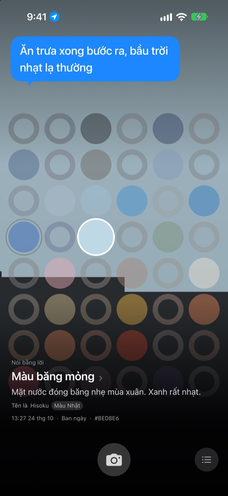
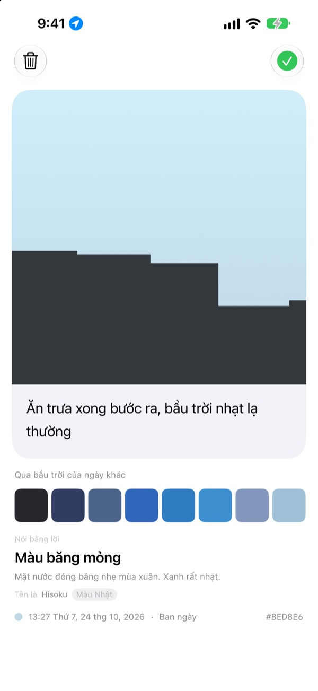
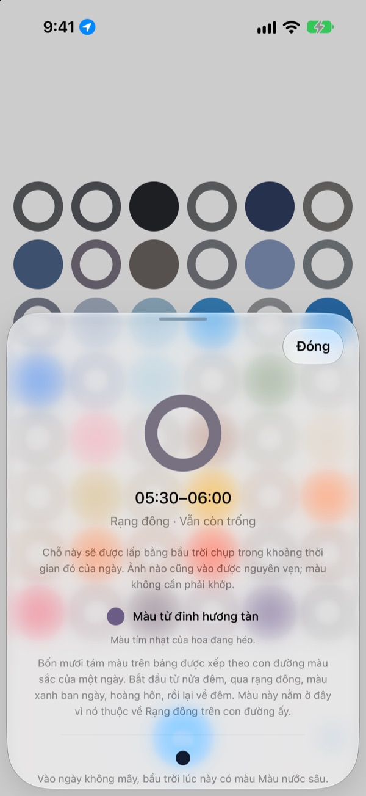
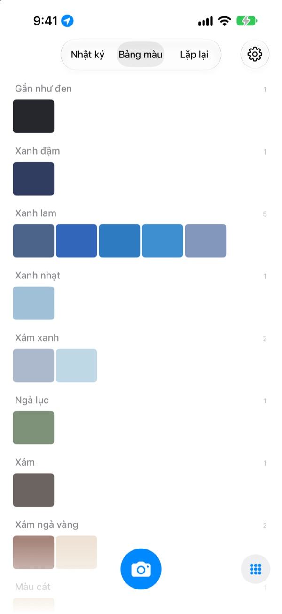

Hôm nay bầu trời
mang màu gì?
Chụp một tấm bầu trời, ô ứng với giờ ấy trên bảng bốn mươi tám ô sẽ mang màu bạn vừa chụp. Màu còn được đặt một cái tên gợi hình, như màu băng mỏng, màu gạch bể bơi hay màu hồng chín mềm.
Miễn phí. Không tài khoản, không đăng nhập.

Thử chạm vào bảng
Chạm vào một ô để xem đó là bầu trời lúc nào trong ngày. Thêm một ảnh bầu trời để lấp ô của giờ hiện tại, rồi lật sang những ngày sau để xem bảng thay đổi ra sao.
Ngày nào cũng nhìn trời, mà chẳng nhớ nổi một màu
Bầu trời ngước nhìn trên đường đi làm, bầu trời lúc bước ra sau bữa trưa: đến tối thì chẳng còn nhớ chúng màu gì. Những tấm ảnh trời đã chụp cũng chìm lẫn giữa bao ảnh khác trong thư viện. SkyDex gom ảnh bầu trời lại thành màu, và bày con đường bầu trời hôm nay đã đi qua lên một tấm bảng.
Mỗi bầu trời đều có tên
Màu bạn chụp trước hết được đặt một cái tên dễ hình dung, như màu băng mỏng, màu gạch bể bơi hay màu hồng chín mềm. Bên dưới là một cái tên có nguồn gốc, lấy từ màu Hàn, màu Nhật, chất màu hoặc màu web.
Đủ gần thì ứng dụng ghi “Tên là”, còn xa thì thành thật ghi “Tên gần nhất”.

Để lại một dòng
Chụp xong, một tấm thẻ mở ra ngay. Hãy ghi lại điều bạn nghĩ khi nhìn bầu trời ấy; mỗi khi chạm vào ô đó trên bảng, dòng chữ sẽ lại hiện lên trên nền trời.
Bạn còn có thể khoác màu của bầu trời ngày khác lên bầu trời trong ảnh này, rồi chia sẻ thành một bức hình.

Ô trống chỉ đường
Chạm vào một ô trống để biết ô đó thuộc lúc nào trong ngày và nên tìm màu gì. Vào ngày không mây, bầu trời giờ ấy mang màu gì, ứng dụng cũng cho biết theo giờ mặt trời mọc và lặn ở nơi bạn đang ở.
Màu không cần phải khớp. Màu xám của ngày u ám cũng là màu trời của ngày hôm đó.

Nhật ký, Bảng màu, Lặp lại
Xem lại những bầu trời đã chụp theo thứ tự thời gian, và gom các màu đã sưu tầm thành bảng màu theo nhóm như xanh lam, xám, màu cát. Chụp lại cùng một giờ vào ngày khác, hai bầu trời sẽ đứng cạnh nhau.
Widget trên Màn hình chính cho bạn xem ngay Bảng hôm nay và Bầu trời hôm nay.

Chỉ ba bước để bắt đầu
- 1
Ngước nhìn lên
Chạm nút máy ảnh dưới bảng và chụp sao cho bầu trời lấp kín ô vuông.
- 2
Một ô được lấp
Ô của giờ hiện tại mang màu bạn vừa chụp và có một cái tên.
- 3
Để lại một dòng
Ghi điều bạn nghĩ khi nhìn bầu trời ấy vào tấm thẻ vừa mở.
Bảng chia một ngày như thế này
- Nửa đêm · 00:00–05:00
- sáu ô
- Rạng đông · 05:00–08:00
- sáu ô
- Ban ngày · 08:00–16:00
- mười hai ô
- Chiều muộn · 16:00–18:00
- sáu ô
- Hoàng hôn · 18:00–21:00
- mười hai ô, mỗi ô 15 phút
- Đêm · 21:00–24:00
- sáu ô
Quanh hoàng hôn, khi bầu trời đổi màu nhanh, các ô xếp dày; giữa đêm, khi trời gần như đứng yên, các ô thưa hơn. Trên cùng là nửa đêm, càng xuống dưới, ngày càng trôi đi.
Câu hỏi thường gặp
Các ô được lấp như thế nào?
Bầu trời chụp hôm nay sẽ lấp ô của giờ chụp. Dù màu không như bạn nghĩ, nó vẫn được giữ nguyên, vì bầu trời lúc ấy thật sự là như vậy. Những bầu trời sưu tầm từ trước thì vào theo màu: nếu đủ gần màu của ô nào, nó lấp ô đó, và mỗi bầu trời chỉ lấp một ô.
Ô hôm qua đã đầy, hôm nay lại trống.
Bảng là của hôm nay. Những ô mà bầu trời hôm qua lấp theo giờ, sang ngày mới sẽ được ghép lại chỉ dựa vào màu. Vì thế có hôm bảng gần như đầy, có hôm trông trống trải. Ảnh không hề mất: mọi bầu trời đã sưu tầm vẫn nằm trong Nhật ký, và theo thứ tự màu trong Bảng màu.
Các ô đã lấp cứ nhạt dần.
Đó là có chủ ý. Ảnh giữ nguyên màu trong một tuần, rồi phai chậm trong tám tuần tiếp theo. Ảnh không bị xóa và cũng không bao giờ phai hẳn. Chụp lại bầu trời vào khung giờ đó, ô sẽ trở về đúng màu ngay. Không có chuỗi ngày liên tiếp nào bị đứt, cũng không có con số nào phải giành lại.
Màu có cần khớp không?
Không. Không có chuyện đạt hay trượt. Ảnh chụp luôn được lưu, và màu xám của ngày u ám cũng là màu trời của ngày hôm đó.
Vì sao ứng dụng hỏi vị trí?
Chỉ để khi bạn chạm vào ô trống, ứng dụng cho biết bầu trời không mây giờ ấy mang màu gì, theo giờ mặt trời mọc và lặn ở nơi bạn đang ở. Ứng dụng chỉ dùng vị trí gần đúng ở mức cây số, và tọa độ không bao giờ gắn vào ảnh. Nếu bạn từ chối, ứng dụng vẫn chạy bình thường và lấy Seoul làm mốc.
Có thể thêm bầu trời từ thư viện ảnh không?
Có. Bầu trời chọn từ ứng dụng Ảnh thay cho máy ảnh cũng được cắt vuông và lấp ô của giờ hiện tại, giống như bầu trời vừa chụp.
Làm sao để xóa ảnh?
Mở ảnh rồi chạm Xóa, hoặc vuốt sang trái trong Nhật ký. Ảnh sẽ bị xóa cùng lúc trên thiết bị và trong iCloud. Nếu gỡ ứng dụng, bản sao trên iCloud vẫn còn, nên khi cài lại, những bầu trời đã sưu tầm sẽ quay về.
Đổi máy thì bầu trời đã sưu tầm ra sao?
Bầu trời của bạn được lưu trong iCloud của chính bạn, nên tiếp tục trên thiết bị mới đăng nhập cùng Tài khoản Apple. Không có tài khoản riêng, không có máy chủ, ảnh và màu không bao giờ được gửi cho nhà phát triển. Không quảng cáo, không theo dõi.
Có thật là miễn phí không?
Thật. Mọi tính năng đều miễn phí. Nếu thích, bạn có thể gửi một khoản ủng hộ nhỏ cho nhà phát triển ngay trong ứng dụng, nhưng khoản ủng hộ không mở khóa tính năng nào cả.
Dùng được trên thiết bị nào?
iPhone chạy iOS 17.0 trở lên, chỉ ở màn hình dọc.
Gặp lỗi, thấy ứng dụng chạy lạ, hay có điều muốn nói, hãy gửi thư đến leeo@kakao.com. Kèm theo tình huống lúc đó và phiên bản iOS sẽ giúp tìm ra nguyên nhân dễ hơn nhiều.